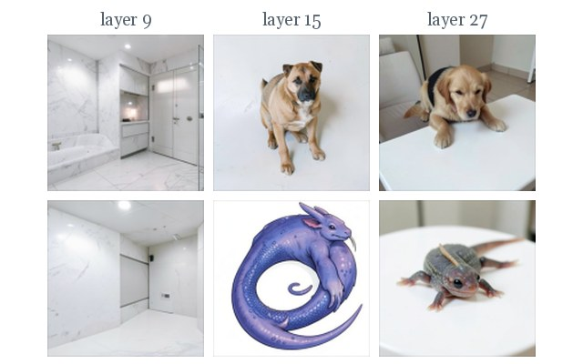
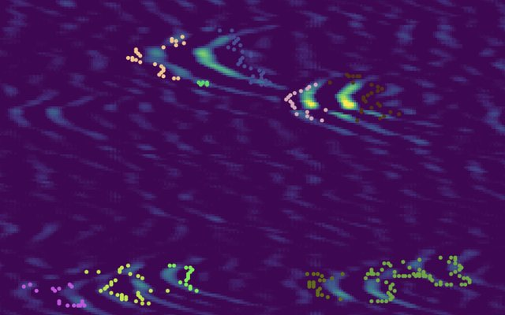
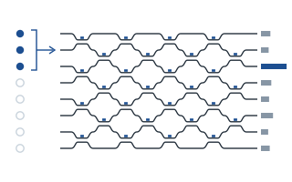
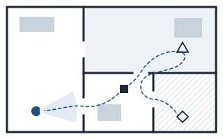
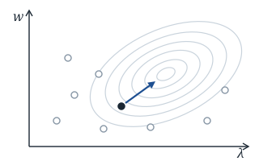

Indian Institute of Technology Kharagpur
Integrated B.Sc. (Honours) and M.Sc. in Chemistry
I’m a Software Engineer (Machine Learning) at Eve Inc., where I build data pipelines for egocentric video. I also built the embedding and serving stack for our real-time event recommendation system. I graduated from IIT Kharagpur with an integrated B.Sc. (Honours) and M.Sc. in Chemistry.
My research interests are interpretability and representation learning for video and physical sensing. At IIT Kharagpur, I led the technical work on iToFD with Prof. Surjya K. Pal, an unsupervised system that detects and sizes weld defects in ultrasonic scans; it became a granted Indian patent and a paper in the ASME Journal of Nondestructive Evaluation. I’ve also studied data pruning for optical neural networks in Prof. Dirk Englund’s group at MIT and, most recently, how the text encoder of a diffusion model forms concepts.
Began independent research on the mechanistic interpretability of text-to-image encoders.
iToFD is published in the ASME Journal of Nondestructive Evaluation, Diagnostics and Prognostics of Engineering Systems.
Joined Eve Inc. as a Software Engineer (Machine Learning).
Finished my integrated B.Sc. and M.Sc. in Chemistry at IIT Kharagpur.
Granted Indian Patent No. 529585 for automatic weld-defect detection in ToFD scans.
Our AI-enabled weld-defect analysis work at IIT Kharagpur was featured in The Times of India.
ASME Journal of Nondestructive Evaluation, Diagnostics and Prognostics of Engineering Systems, 2025
Finds weld defects in ToFD B-scans without labels: Hilbert-envelope denoising, then DBSCAN clustering of the diffraction signals, then sizing from each cluster’s geometry.
Indian Patent No. 529585, granted by the Patent Office, Government of India, March 2024

Independent research collaboration
Studied how the text encoder of FLUX.2 Klein forms concepts layer by layer, using Diffusion Lens alongside logit and Jacobian lenses.

With Prof. Surjya K. Pal, Centre of Excellence in Advanced Manufacturing Technology, IIT Kharagpur
Led the technical work on iToFD, an unsupervised system that finds and sizes weld defects in ultrasonic scans. It cut inspection of a 15 m weld from hours to minutes.

With Prof. Dirk Englund and Dr. Sri Krishna Vadlamani, EECS, Massachusetts Institute of Technology
Trained optical neural networks on only the hardest training examples; they kept about 97% MNIST accuracy using a sixth of the data.

With Prof. Mohan Sridharan, School of Computer Science, University of Birmingham
Compared methods for agents that must find several objects in unfamiliar homes, using simulation in AI Habitat.

With Prof. Ankur Sinha, Centre for Data Science and AI, IIM Ahmedabad
Treated hyperparameter tuning as a bilevel problem, solved with a genetic algorithm plus a linear-programming refinement step.
Integrated B.Sc. (Honours) and M.Sc. in Chemistry
Presented our AI-enabled ToFD software at the Tata Steel Technical Exhibition, Jamshedpur.
Gold medal (team) at Inter IIT Tech Meet 12.0 for AI-enabled ToFD weld-defect detection.
All-India Rank 5287 in JEE Advanced among 250,000 eligible candidates, and 96.11 percentile in JEE Main.